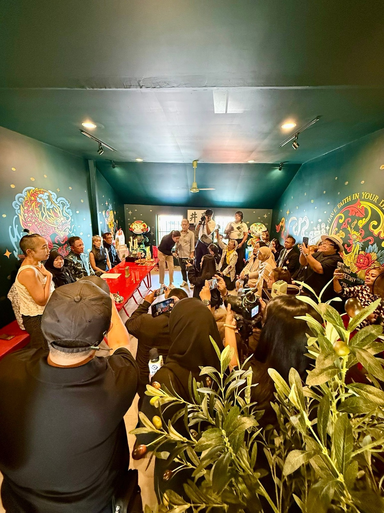
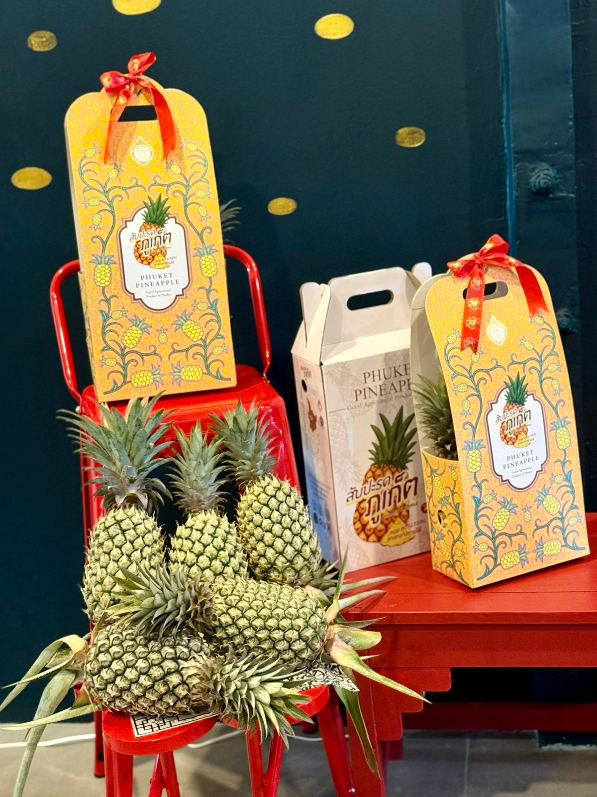
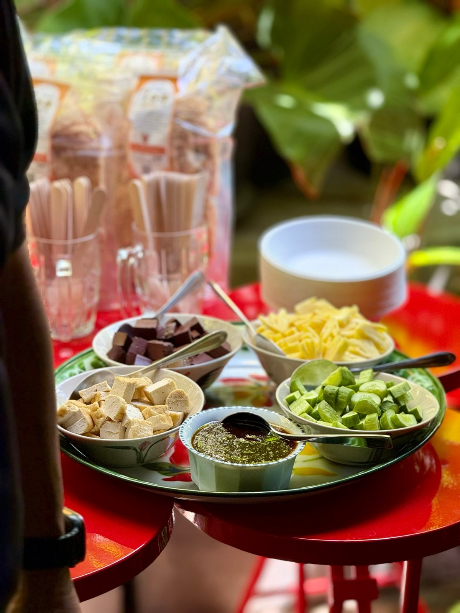
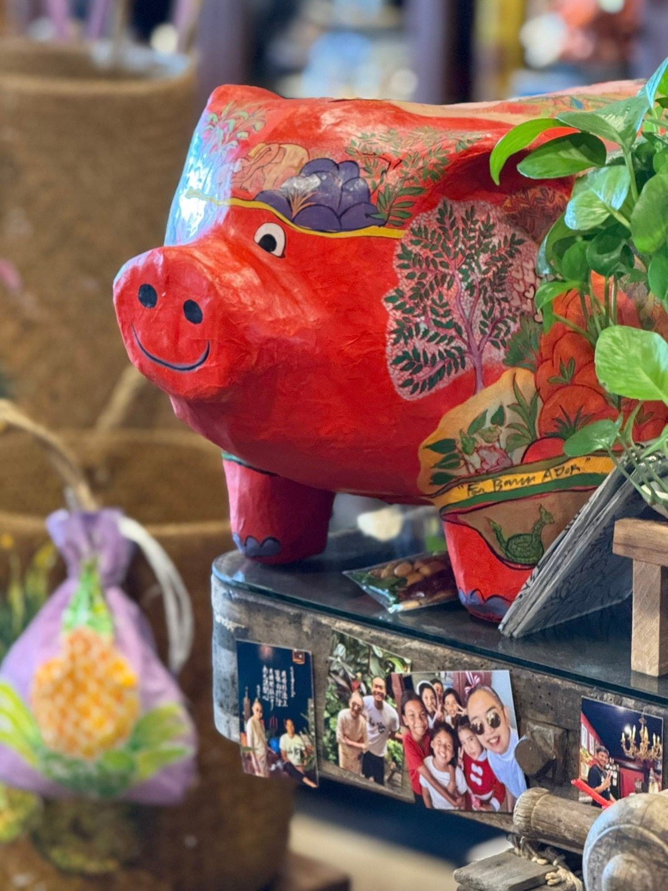

2569 · สื่อ · เหตุการณ์
วิสาหกิจเพื่อสังคมจัดแถลงข่าว ที่ร้านโต๊ะแดงในเมือง ชั้น 2




ชั้น 2 โต๊ะแดงภูเก็ต รับได้ 24 คน…นะ 😅🔥
ขอบคุณวิสาหกิจเพื่อสังคม รู้รักสามัคคี ที่จัดงานแถลงข่าว #อ่องหลาย #โป๊ปี่เป่งอ๊าน ที่ร้านโต๊ะแดงในเมือง 🧧
เตี้ยมฉู่หนวยนุ้ย อายุกว่า 110 ปีแล้ว เอาเหล็กดามไว้ข้างล่าง ครั้งนี้ตามกำหนดการจะมีคนมางานราว 20 คน ถึงเวลาจริงมากันกะเอ ทั้งนักข่าว จนท ภาครัฐ เอกชน เกษตรกร คุณครู ลูกก้อเอากับเค้าด้วย น่าจะราว 40 คน
สุดท้ายจบสวย งานดี ของกินหรอย เบียดกันฮิดนึง รักกันมากกว่าเดิม สำคัญสุด บ้านไม่โหะ 😅
.
ขอบคุณนะ 🥰❤️
#longdaengPhuket 🧧
#tohdaengPhuket 🧧
#บ้านอาจ้อ ❤️